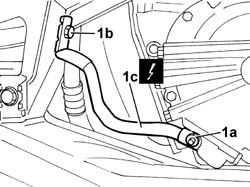

5505A38 BODYSHELL POWER UNIT EARTH LEAD - R.R.
- Path
- Procedures > 55 ELECTRICAL EQUIPMENT > 5505 INSTRUMENT/GAUGE ELECTRICAL CIRCUITS > 5505A multi-function components > 5505A38 BODYSHELL POWER UNIT EARTH LEAD - R.R.
- Kind
- repair procedure (removal / refitting; the operation number is the code)
- Applies to
- engines: 3.0 V6, 3.2 V6; all production periods
- Interactive page
- https://sloeber94.github.io/elrnDB-lThss/en/#/147118
Applies to: engines: 3.0 V6, 3.2 V6; all production periods
 Removing
Removing
 Refitting
Refitting- Position the vehicle on a lift.
- Open the boot, remove the cover on the left hand side and disconnect the negative battery lead.
See in Op. 4450B04 Right FRONT WHEEL (one) - R.R.
- Raise the vehicle on the lift.
See in Op. 7055B64 Engine compartment DUST SEAL in front wheel arch (one), left or right - R.R.
See in Op. 7055B42 FRONT WHEEL ARCH LINER (one), left or right - R.R.
1. Undo the nut (1a) fixing the earth lead (1c) to the gearbox, then undo the bolt (1b) fixing it to the bodyshell and remove the lead.
 | Description | Connector |
|---|---|---|
1c | Earth on engine | C040 |

Applies to: engines: 3.0 V6, 3.2 V6; all production periods
Refitting
Removing- Position the earth lead and tighten the nut securing it to the gearbox to the recommended torque.
 | Value - daNm | Fastening | Component | Ø |
|---|---|---|---|---|
(Gearbox side) 1.5 | Nut | POWER UNIT/BODY-SHELL EARTH CABLE | M8 |
- Tighten the bolt fixing the lead to the bodyshell to the recommended torque.
| Value - daNm | Fastening | Component | Ø |
|---|---|---|---|---|
1b | (Bodyshell side) 1.5 | Bolt | POWER UNIT/BODY-SHELL EARTH CABLE | M8 |
See in Op. 7055B42 FRONT WHEEL ARCH LINER (one), left or right - R.R.
See in Op. 7055B64 Engine compartment DUST SEAL in front wheel arch (one), left or right - R.R.
- Lower the vehicle
See in Op. 4450B04 Right FRONT WHEEL (one) - R.R.
- Connect the negative battery lead, then close the boot.
- Remove the vehicle from the lift.
Topics linked from this page (3)
- 4450B04 Right FRONT WHEEL (one) - R.R.
- 7055B42 FRONT WHEEL ARCH LINER (one), left or right - R.R.
- 7055B64 Engine compartment DUST SEAL in front wheel arch (one), left or right - R.R.